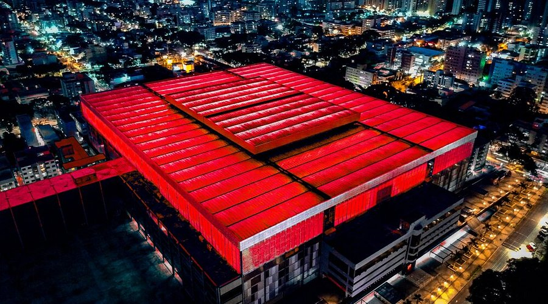
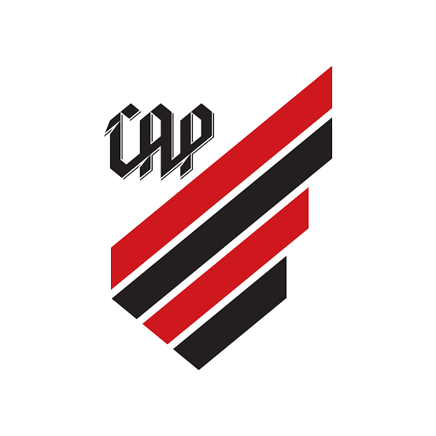
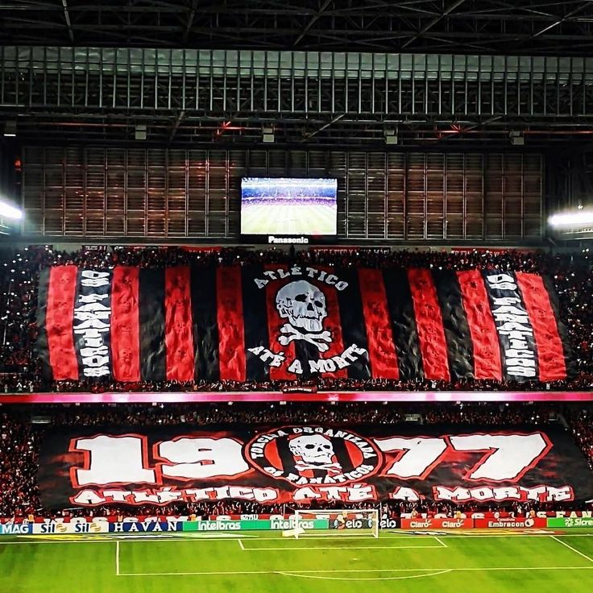
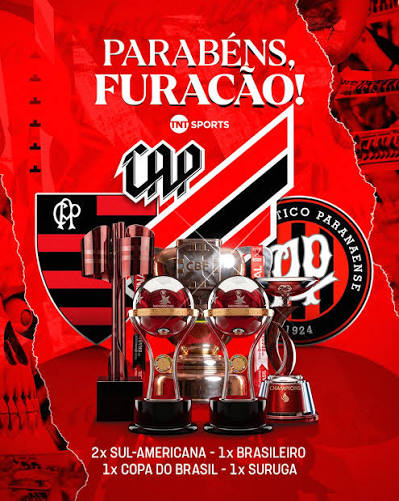

Sobre o Athletico Paranaense
O Athletico Paranaense é um dos principais clubes de futebol do estado do Paraná e do futebol brasileiro. Fundado em 26 de março de 1924, o clube tem sua sede em Curitiba e é conhecido pelas cores vermelho e preto ao longo de sua história, o Athletico conquistou importantes títulos e ganhou destaque tanto no cenário nacional quanto internacional.

A ORIGEM DO ATHLETICO PARANAENSE
Em 1912, Joaquim Américo Guimarães reuniu um grupo de amigos e fundou o International Foot-Ball Club, que tinhas as cores preta e branca no seu uniforme e disputava torneios na baixada da Água Verde. Nos torneios internos organizados pelo Internacional, entravam em campo times secundários, formados por sócios do clube, um desses grupos decidiu dar o grito de independência e, no dia 24 de maio de 1914, fundou o América Futebol Clube que utilizava as cores vermelha e branca, seu primeiro presidente foi o capitão Augusto do Rego Barros. América e Internacional passaram então a disputar partidas amistosas e logo se tornaram adversários também na disputa do campeonato estadual. O Internacional venceu o primeiro, em 1915. O América levantou o troféu em 1917. Entre os irmãos, surgia uma rivalidade com equipes independente ate 1924 os dois clubes se fundiram assim dando origem ao Club Athletico Paranaense ele surgiu em Curitiba,O clube cresceu no estado ao herdar a tradição da Baixada, conquistar títulos estaduais marcantes e adotar o famoso apelido de "Furacão" na campanha invicta de 1949, firmando-se como uma das maiores forças do futebol paranaense e nacional, Petraglia e o reerguimento (1995–1999): O título da Série B em 1995, seguido pela reconstrução total da Arena da Baixada inaugurada em 1999, reposicionou o clube em patamar de vanguarda, A conquista nacional comandada por craques em campo colocou definitivamente o Rubro-Negro entre os grandes vencedores do país, Os títulos da Copa Sul-Americana (2018 e 2021) e da Copa do Brasil (2019) consolidaram o clube como único do estado com relevância internacional oficial.

O Furacão na Cultura
O Athletico Paranaense é um pilar da cultura e da identidade do Paraná, extrapolando o futebol para influenciar o espaço urbano, a arte e o sentimento de pertencimento local. Esteticamente reconhecido pelo rubro-negro e pelo conceito do "Furacão", o clube se manifesta na arte urbana através de grafites e mosaicos na Ligga Arena, na literatura por meio de biografias e crônicas, e na música com cantos de torcida e referências no rap e rock local. Em suma, o clube funciona como um patrimônio cultural vivo que conecta comunidade, inovação e expressão artística em Curitiba e no estado.

PinterestCuriosidades
Curiosidade 1
O apelido é “Furacão” 🌪️ — O clube ganhou esse apelido por causa de uma campanha muito forte no Campeonato Paranaense de 1949, quando marcou muitos gols e passou por seus adversários com grande facilidade
Curiosidade 2
🏟️ — A casa do Athletico, em Curitiba, recebeu jogos da Copa do Mundo de 2014 e foi uma das arenas mais modernas do país na época
